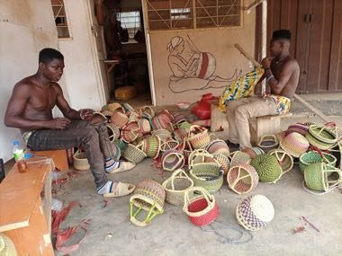

Home / Living Traditions / Africa: Sahel, West and Central
Playable heritage gameBolga Basket Weaver
Also known as Bolga baskets
Bolga baskets come from the Bolgatanga area in the Upper East Region of northern Ghana. Weavers split and dye strands of tall grass and plait them over and under into round-mouthed market baskets with two leather loop handles, setting bands of red, green and black against pale straw.



How to play
- The lit case above the bench shows the market basket as it should finish. Look at how its pattern climbs the curve.
- Choose a strand colour below the basket, then lay each stitch across the front of the ring. The gold ring marks the next place and the strip under the basket shows the row in hand.
- Work up from the base, one ring at a time, so each ring lines up with the bands in the case.
- Press Check when every stitch is laid. Undo takes the last stitch back.
Rules at a glance
- The basket is built from 9 rings of 14 strips, laid from the base upward, one ring at a time. The two leather handles are already fitted.
- Each strip takes one of four colours: straw, red, green or black.
- The score is the share of stitches whose colour matches the pattern, counted beyond what laying only the commonest colour would earn. Three stars need 88, two need 65 and one needs 40.
- Undo takes back the last strip. A basket left plain earns no stars.
About the tradition
Weavers around Bolgatanga, most of them women, gather and split the grass, dye it and plait it by hand, and their baskets are sold in the town's markets and far beyond. The size, handle and colour bands show which job a basket was made for.
Origins
A living tradition passed from person to person; it is not tied to a single dated origin. It belongs to the cultural world of Africa: Sahel, West and Central.
Credits
- Photo: Dnshitobu, CC BY-SA 4.0, source on Wikimedia Commons
- Text: CC BY-SA 4.0, World Heritage Games.
Sources

Get the app
Bolga Basket Weaver is coming to the App Store and Google Play. One app, many traditions, no account needed.
Included in Basketry & Straw of the World
More games to play


Adire indigo resist dyeing
Nigeria · Crafts and makingPlay preview · in the Textile Crafts of the World app


Celtic knot weave
Ireland +1 · Crafts and makingPlay preview · in the Textile Crafts of the World app
More from Ghana

Adinkra Cloth Stamping
Ghana +1 · Crafts and makingPlay preview · in the Paper & Paint of the World app


Asafo Flag Appliqué
Ghana · Crafts and making
Fufu Pounding Rhythm
Ghana +1 · Crafts and makingPlay preview · in the Music & Dance of the World app